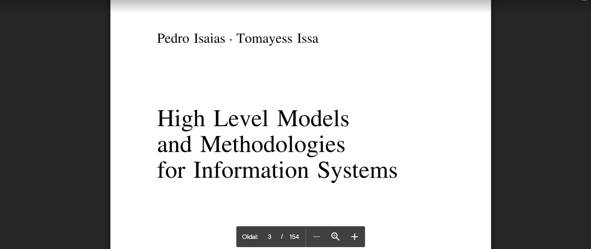

Vállalati információs rendszerek fejlesztése

Ez a tantárgy a vállalati információs rendszerek fejlesztésének világába vezet be.
Tartalom:
- Vállalati modellek, vállalat fogalma, fő tevékenységi elemek, áramlások, értéklánc modell, struktúra modellek.
- VIR fogalma, szerepe, kialakulása, fejlődése.
- Folyamat- és adatmodellek, adatmodelltípusok, UML osztálymodell.
- Workflow-rendszerek működése, workflow komponensei, ProcessMaker és Process Modeler.
- VIR-informatikai architektúra típusok.
- SOA-architektúra kialakulása, alapelemei, kialakítása, keretrendszere.
- Információs Rendszerek Fejlesztési Életciklusai.
- Fejlesztési módszertanok.
- Weboldalak fejlesztési módszerei.
- Használhatósági értékelési modellek.
- Minőségértékelési modellek
- Információs Rendszer modellek a siker értékeléséhez.
- Projekt menedzsment; Projekt szereplői, fázisok, ütemezés.
- VIR: az információ uralma, esettanulmányok.